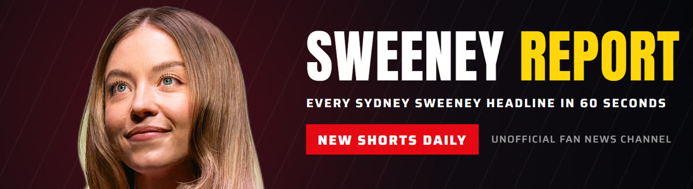
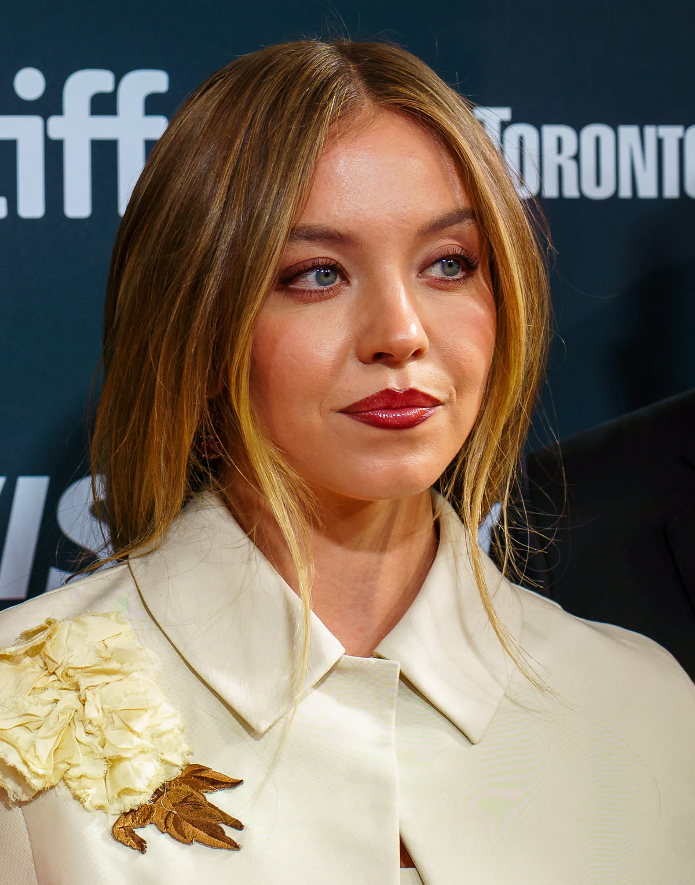
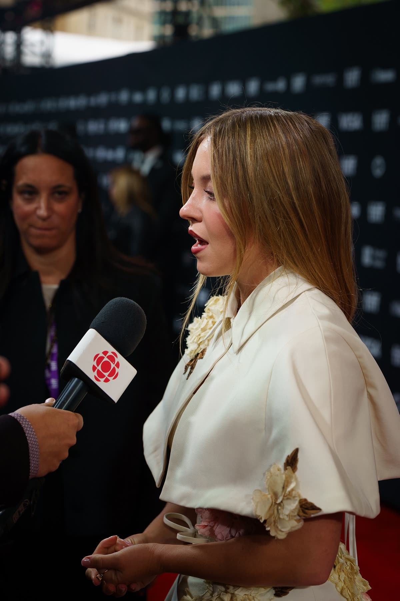

Every Sydney Sweeney headline, in 60 seconds.
Movies, series, casting, box office, interviews, her SYRN brand and her ads: the latest Sydney Sweeney news, with every source linked. Watch the Shorts on YouTube.


Sydney Sweeney's Housemaid's Secret Set Video From E! News
E! News posted a clip of Sydney Sweeney taking a selfie with a dog on the set of The Housemaid's Secret, the sequel Variety said opens in December 2027.
November 19, 2026

Sydney Sweeney's Housemaid Sequel Shoot Pays Hoboken Big
Sydney Sweeney and Michele Morrone returned to Hoboken to film The Housemaid's Secret, a shoot the city says will bring in $36,100.
November 19, 2026

Sydney Sweeney's Gundam Film: Is It Bigger Than One Piece?
IMDb called Sydney Sweeney's Netflix Gundam movie bigger than One Piece, but the claim is unverified and no release date is confirmed.
November 19, 2026

Sydney Sweeney's PowerPoint That Changed Her Life
Sydney Sweeney has said she wrote a five-year career plan at 12 and pitched it to her parents in a PowerPoint, before Euphoria made her a star.
November 19, 2026

Sydney Sweeney's Small-Town Origin Before Hollywood
Before the Emmy nominations, Sydney Sweeney was a kid in the Pacific Northwest who pitched her parents a five-year plan to try acting.
November 19, 2026

Sydney Sweeney Could Wave the F1 Las Vegas Checkered Flag?
Yahoo Sports lists Sydney Sweeney among five celebrities who could wave the checkered flag at the 2026 F1 Las Vegas Grand Prix, though nothing is confirmed.
November 18, 2026

Sydney Sweeney's Movie Roles Ranked: Madame Web Lands Last
EarlyGame ranked 15 Sydney Sweeney film roles and put Madame Web at the bottom, with Cassidy Way, Anyone But You and The Voyeurs also on the list.
November 18, 2026

Sydney Sweeney Named for Bond by Ex-Bond Girl, Per Page Six
Page Six reported that Brad Pitt, Florence Pugh and Sydney Sweeney are linked to the new James Bond film, though no casting has been announced.
November 18, 2026

Sydney Sweeney's Next Comedy: What's Actually Confirmed
Apple is developing a remake of the 1964 comedy That Man From Rio with Sydney Sweeney and director Justin Lin. Here is what has been confirmed.
November 18, 2026

Sydney Sweeney: Only One Upcoming Film Has a Release Date
Only The Housemaid's Secret has a release date so far, while Gundam and The Custom of the Country are still waiting for theirs.
November 18, 2026

Sydney Sweeney in the Race for Pattinson's Bond Girl?
Reports name Sydney Sweeney among possible leads opposite Robert Pattinson in the next James Bond, but nothing has been confirmed or announced.
November 18, 2026

Sydney Sweeney's American Eagle Jeans: Who Makes Them? NPR Reports
NPR traveled to Karachi to ask who makes the denim from Sydney Sweeney's American Eagle campaign, and spoke with a worker paid about $144 a month.
November 17, 2026

Sydney Sweeney's Barbarella Remake: Is It Still Happening?
Deadline reported in June 2026 that Sydney Sweeney's Barbarella remake is still active at Sony, now under her new company Honey Trap.
November 17, 2026

Sydney Sweeney's Forgotten Blumhouse Horror You Can Stream
Sydney Sweeney's 2020 Blumhouse thriller Nocturne premiered on Prime Video, and many fans overlooked it. Here is what to know before you watch.
November 17, 2026

Sydney Sweeney's Novig Ad Fueled an 80% Growth Surge
Sydney Sweeney shared a Fortune report showing her part-owned prediction market Novig grew 80% in 30 days after the "Just Sports" campaign.
November 17, 2026

Sydney Sweeney's The Voyeurs: How Critics Really Rated It
Sydney Sweeney's Prime Video thriller The Voyeurs drew mixed reviews, with Rotten Tomatoes under 50% and a 54 on Metacritic.
November 17, 2026

Sydney Sweeney Tipped as the Next Bond Girl? What's Real
Sydney Sweeney's name has surfaced in Bond casting talk, but no female lead has been announced and the speculation remains unconfirmed.
November 17, 2026

Sydney Sweeney on Madame Web: What She Really Said
Sydney Sweeney addressed the backlash to Madame Web, calling it a strategic business decision and saying she would return for the right story.
November 16, 2026

Sydney Sweeney on Madame Web: What She Actually Said
Sydney Sweeney told GQ U.K. that Madame Web, a box-office flop, helped her build a relationship with Sony that led to Anyone But You and Barbarella.
November 16, 2026

Sydney Sweeney's Cassie Howard: The Full Euphoria Arc
From a 2019 debut to a 2022 Emmy nomination and a series finale on May 31, 2026, here is how Sydney Sweeney's Cassie Howard story played out.
November 16, 2026

Sydney Sweeney's Netflix Show Cancelled After One Season
Netflix ended Everything Sucks!, the 1990s teen comedy featuring Sydney Sweeney, in April 2018 after one ten-episode season, despite fan and cast support.
November 16, 2026

Sydney Sweeney's Role Before Euphoria You Might Have Missed
Before Cassie Howard in Euphoria, Sydney Sweeney played Eden, a young wife in season two of Hulu's The Handmaid's Tale.
November 16, 2026

Sydney Sweeney Worked With Amy Adams Before Euphoria
Before Euphoria, Sydney Sweeney appeared opposite Amy Adams in HBO's 2018 miniseries Sharp Objects, playing the recurring role of Alice.
November 16, 2026

Sydney Sweeney & Glen Powell: How a Rom-Com Made Them a Duo
A modest Christmas opening grew into a roughly $220 million hit, and Sydney Sweeney and Glen Powell now say they want to work together again.
November 15, 2026

Sydney Sweeney on Amanda Seyfried: "Like a Sister to Me"
Sydney Sweeney paid tribute to co-star Amanda Seyfried on her birthday, and Seyfried replied that it is "easy to support" her.
November 15, 2026

Sydney Sweeney Meeting With Rabbis? What Page Six Reports
Page Six reportedly says Sydney Sweeney has met with rabbis and may be considering conversion, claims that remain unconfirmed by her or Scooter Braun.
November 15, 2026

Sydney Sweeney: Euphoria Season 3 Explained in 30 Seconds
Euphoria returned to HBO on April 12, 2026 with a five-year time jump that left Sydney Sweeney's Cassie engaged to Nate and living in the suburbs.
November 15, 2026

Sydney Sweeney's Most Hate-Watched Movie Just Hit HBO Max
Madame Web, the Sony Spider-Man spinoff with Sydney Sweeney as Julia Cornwall, has officially landed on HBO Max, IMDb reported.
November 15, 2026

Sydney Sweeney's Housemaid Made 10x Its Budget, Beating Anyone But You
The Housemaid grossed about $400 million on a $35 million budget, passing Anyone But You as Sydney Sweeney's biggest starring hit. A sequel is on the way.
November 15, 2026

Sydney Sweeney: $220M Hit vs $2M Flop, Same Star
Anyone But You earned about $220M worldwide on a $25M budget, while Christy opened to $1.3M and ended near $2M.
November 14, 2026

Sydney Sweeney's Real Boxing Training for Christy, Explained
Sydney Sweeney told W Magazine about her roughly three-and-a-half-month training routine to play boxer Christy Martin in the biopic Christy.
November 14, 2026

Sydney Sweeney's Christy: Training, Weight Gain and Box Office
Sydney Sweeney trained for months and reportedly gained about 30 pounds to play boxer Christy Martin, but the biopic opened to roughly $1.3 million.
November 14, 2026

Sydney Sweeney's Most Overlooked Role Is On HBO
SlashFilm highlighted Sydney Sweeney's Sharp Objects role as one of her best, and as one of her most overlooked performances.
November 14, 2026

Sydney Sweeney's The Housemaid: From Bestselling Novel to Hit
Paul Feig's thriller, adapted from Freida McFadden's novel, grew from a $35 million production into a global hit, and Lionsgate has ordered a sequel.
November 14, 2026

Sydney Sweeney Asked to Bring Back F1 Grid Models in Vegas
A former grid girl publicly asked Sydney Sweeney to back the return of models to the Formula 1 Las Vegas Grand Prix, according to Fox News and Marca.
November 14, 2026

Sydney Sweeney and Scooter Braun's Road Trip to Sleepy Hollow
OK Magazine published photos of Sydney Sweeney and Scooter Braun on what it called a little road trip to Sleepy Hollow.
November 13, 2026

Sydney Sweeney Name Pops Up Over Kendall Jenner's Tequila Ad
Instagram commenters linked Kendall Jenner's new 818 Tequila ad to Sydney Sweeney's Novig spot, though Jenner has not said it was inspired by it.
November 13, 2026

Sydney Sweeney's Honey Trap Dark Comedy Lands Sales Agent
Littermates, a dark comedy produced by Sydney Sweeney's Honey Trap, has signed with Dawson for sales at the American Film Market, Screen Daily reported.
November 13, 2026

Sydney Sweeney's SYRN Goes Full Holiday With New Campaign
Sydney Sweeney's SYRN loungewear brand unveiled a winter-themed holiday social media campaign, Reality Tea reported, as the shopping season begins.
November 13, 2026

Sydney Sweeney's SYRN Takes On Kim Kardashian's SKIMS This Christmas
Sydney Sweeney's SYRN and Kim Kardashian's SKIMS launched rival holiday campaigns, one built around The Grinch and the other around the Kardashian-Jenner family.
November 13, 2026

Sydney Sweeney's Housemaid Hits a Huge Streaming Milestone
The R-rated thriller passed its first 30 days on HBO Max, ScreenRant reported, while a sequel is set for December 17, 2027.
November 13, 2026

Sydney Sweeney Filmed a Tearful Scene Days After That Kiss
Sydney Sweeney was photographed crying on the New York set of The Housemaid's Secret, reportedly days after filming an onscreen kiss with Stephen Kalyn.
November 8, 2026

Sydney Sweeney's Novig Ad: Lost 200K Followers, Then Rebounded
Sydney Sweeney reportedly lost over 200,000 Instagram followers after her Novig ad, then won back about 100,000, according to Newsweek.
November 8, 2026

Sydney Sweeney Reportedly Eyeing a Secret Move to England
The Sun reportedly says Sydney Sweeney viewed a home in Little Tew and is weighing a part-time move to England with Scooter Braun.
November 8, 2026

Sydney Sweeney's Reported Move Has Cotswolds Prices in Focus
The Daily Mail reported that Sydney Sweeney is looking at homes in Little Tew, as celebrity arrivals fuel debate over rising Cotswolds prices.
November 8, 2026

Sydney Sweeney's $69 SYRN Holiday Set Is Here
Sydney Sweeney's SYRN brand released the $69 Snow Problem Flannel Cami and Short Set as part of its latest Christmas campaign, RealityTea reported.
November 8, 2026

Sydney Sweeney's Sleepy Hollow Is Now an Erotic Thriller
Sydney Sweeney is reportedly set to play Katrina Van Tassel in Hollow, Lindsey Anderson Beer's gothic erotic thriller based on her own debut novel.
November 8, 2026

Sydney Sweeney vs Jude Bellingham: The Ad Double Standard Debate
Commentator Kinsey Schofield said reactions to Bellingham's Calvin Klein ad differ from the backlash Sydney Sweeney faced over her American Eagle campaign.
November 7, 2026

Sydney Sweeney Embraces Michele Morrone On Set: What's Going On?
TMZ published set photos of Sydney Sweeney embracing Michele Morrone in New York City and said the moment was a scene for The Housemaid's Secret.
November 7, 2026

Sydney Sweeney Shares a Spooky Road Trip With Scooter Braun
Sydney Sweeney shared Instagram Stories of a fall road trip to Sleepy Hollow with Scooter Braun, including a playful Headless Horseman moment.
November 7, 2026

Sydney Sweeney: Every Major Award Nomination, Checked
Sydney Sweeney has two Emmy nominations, one SAG nod and no Golden Globe nominations. Here is what her awards record shows.
November 7, 2026

Sydney Sweeney Could Soon Be Meghan Markle's Neighbor
Reports say Sydney Sweeney is looking at Cotswolds properties, and a News24 panel joked about her possible famous neighbors, Harry and Meghan among them.
November 7, 2026

Sydney Sweeney's Syrn Christmas Campaign Sparks Backlash
Sydney Sweeney's Syrn holiday campaign drew criticism over its Cindy Lou Who look, while some supporters called the reaction exaggerated.
November 7, 2026

Sydney Sweeney Had to Audition for The White Lotus
Sydney Sweeney has said she had to tape an audition and go through a callback to win Olivia Mossbacher in HBO's The White Lotus.
November 6, 2026

Sydney Sweeney's Sleepy Hollow Movie Reportedly Lands Its Ichabod
Nicholas Galitzine is reportedly in final negotiations to play Ichabod Crane opposite Sydney Sweeney's Katrina Van Tassel in Sony's Sleepy Hollow reimagining, Hollow.
November 6, 2026

Sydney Sweeney Endorsed as the Next Bond Girl by 007 Star
Trina Parks, the first Black Bond girl, told The Telegraph that Sydney Sweeney would be a great fit for Bond 26 as the franchise prepares a new 007.
November 5, 2026

Sydney Sweeney's Biggest Box Office Hit Isn't What You Think
The Housemaid is Sydney Sweeney's top-grossing lead role, but a small part in a Tarantino film still holds her biggest worldwide total.
November 5, 2026

Sydney Sweeney Just Got a Bond Girl's Seal of Approval
Diamonds Are Forever actor Trina Parks told The Telegraph she would love to see Sydney Sweeney as the next Bond love interest.
November 4, 2026

Sydney Sweeney Backed by Former Bond Girl for 007 Role
Trina Parks, who appeared in Diamonds Are Forever, publicly backed Sydney Sweeney for a possible 007 part, though nothing has been confirmed.
November 4, 2026